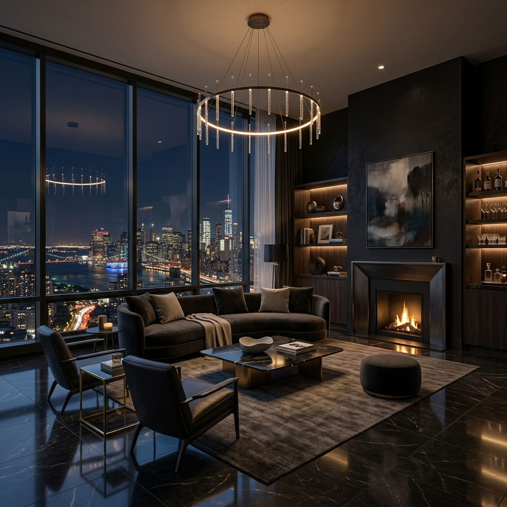
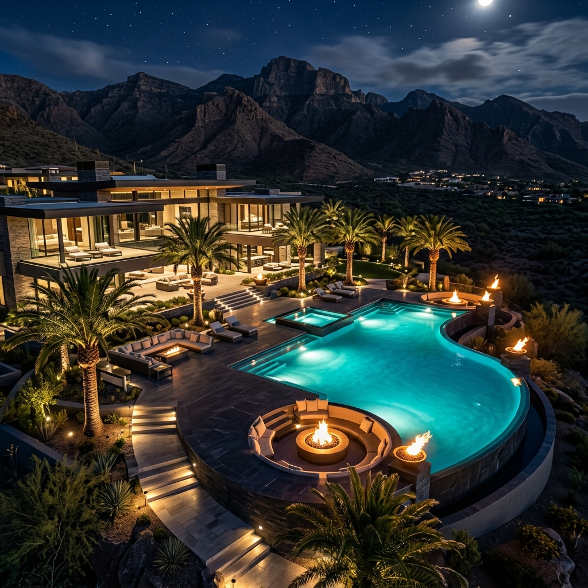

In the rarefied air of the ultra-prime real estate market, the definition of luxury has undergone a profound transformation. As we move through 2025, the world's most discerning buyers are no longer looking for just square footage or ostentatious displays of wealth. Instead, they are seeking curated experiences, absolute privacy, and architectural masterpieces that serve as both sanctuaries and appreciating assets.
The global landscape is shifting. While traditional hubs like Geneva, London, and New York remain cornerstones of the luxury market, we are seeing a massive influx of capital into "lifestyle destinations"—places where the boundary between work and retreat is seamlessly blurred. Dubai, Miami, and the Swiss Alps are experiencing unprecedented demand for trophy properties that offer more than just a place to reside.
The Rise of the "Invisible Home"
Privacy has always been the ultimate luxury, but today it is being engineered into the very DNA of architecture. We are seeing a surge in demand for properties that feature subterranean entrances, biometric security hidden behind artisanal panels, and landscaping designed specifically to block satellite imaging. The modern billionaire wants to be completely invisible while maintaining a 360-degree connection to their environment.
"True luxury is the ability to disappear in plain sight, surrounded by beauty that no one else knows exists."
This desire for invisibility is coupled with a technological revolution. AI-driven building management systems now anticipate a resident's needs before they are even expressed—adjusting lighting to circadian rhythms, managing air quality at a hospital-grade level, and ensuring the property remains carbon-neutral through integrated renewable systems that are virtually silent.

Wellness as the New Golden Standard
The "home spa" has been replaced by the "home longevity center." We are now facilitating acquisitions for properties that include cryotherapy chambers, hyperbaric oxygen tanks, and private medical suites. Buyers are increasingly viewing their homes as the primary tool for their health and longevity. It's no longer about a gym; it's about a complete ecosystem designed to optimize human performance.
Furthermore, the biophilic movement has reached its zenith. Internal courtyard forests, waterfall walls that act as natural air purifiers, and "living" facades are no longer optional extras. They are essential components for the modern buyer who recognizes that mental well-being is intrinsically tied to their proximity to the natural world.

Conclusion: A Legacy of Curation
As we look toward the remainder of 2025, the ultra-prime market remains remarkably resilient. For the world's 0.1%, real estate remains the most tangible and rewarding way to preserve legacy. However, the properties that will hold their value—and their allure—are those that successfully blend technological invisibility with uncompromising architectural soul.
At LuxEstate, we continue to bridge the gap between these extraordinary properties and the individuals who deserve them. The market is not just about price; it's about the elevation of existence.